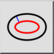
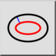
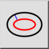
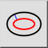

Curva Paralela (com Distância)
Barra de Ferramenta / Ícone:
 

Menu: Draw > Elipse > Curva Paralela (com Distância)
Atalho: E, C
Comandos: ellipseoffset | ec
Esta é uma tradução automática.
Barra de Ferramenta / Ícone:
 

Menu: Draw > Elipse > Curva Paralela (com Distância)
Atalho: E, C
Comandos: ellipseoffset | ec
Com essa ferramenta, você pode criar paralelas à linhas existentes ou arcos e círculos concêntricos.